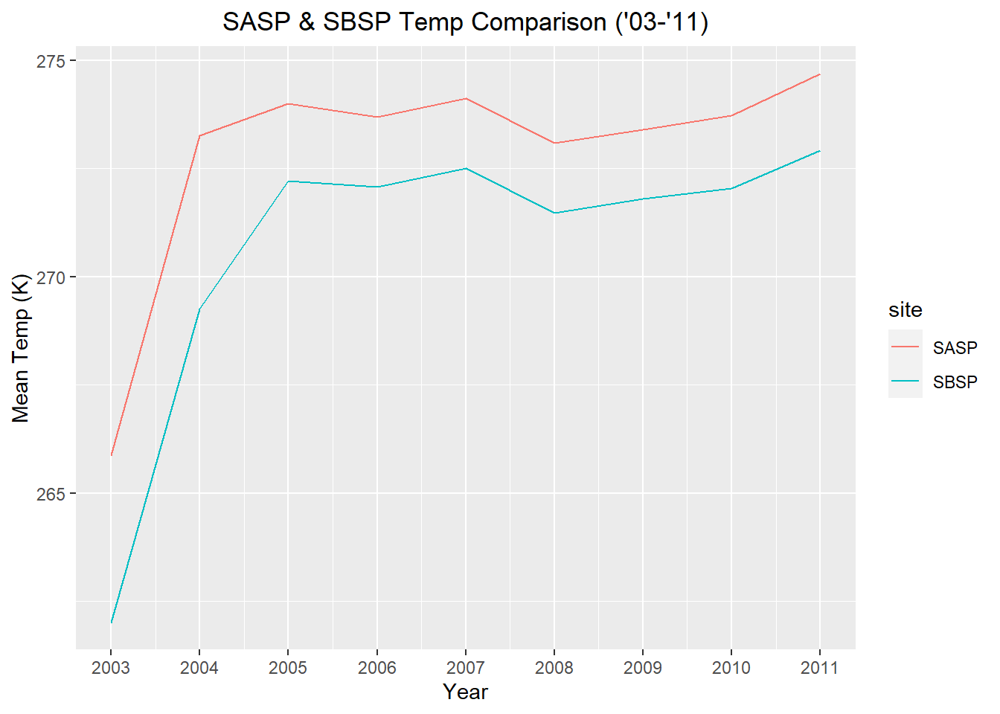
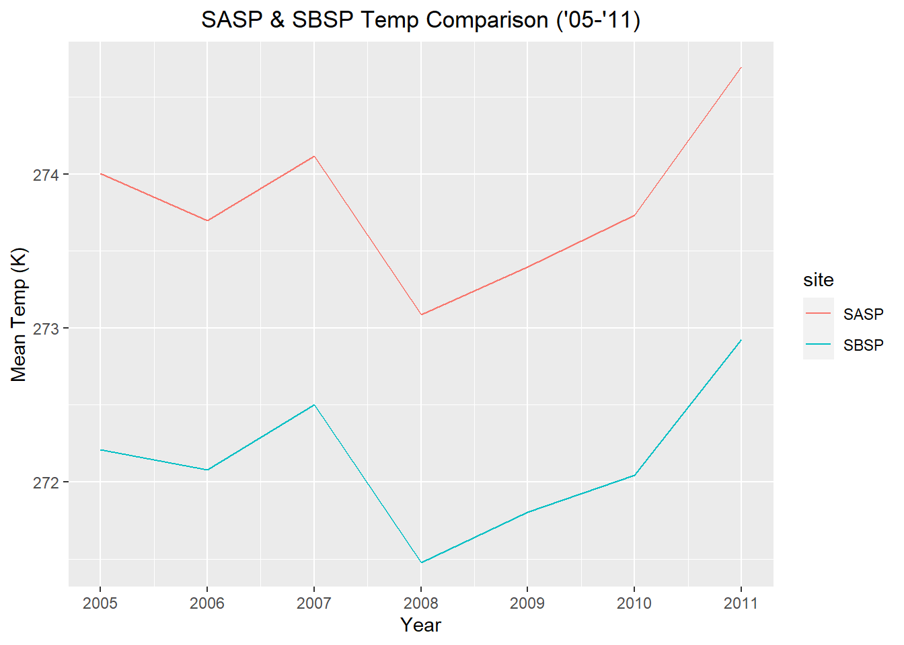
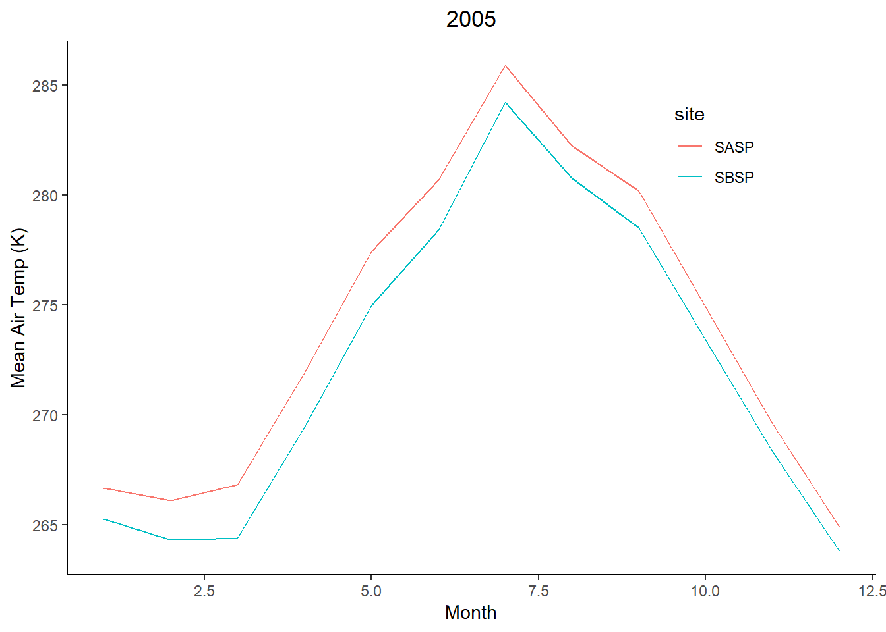
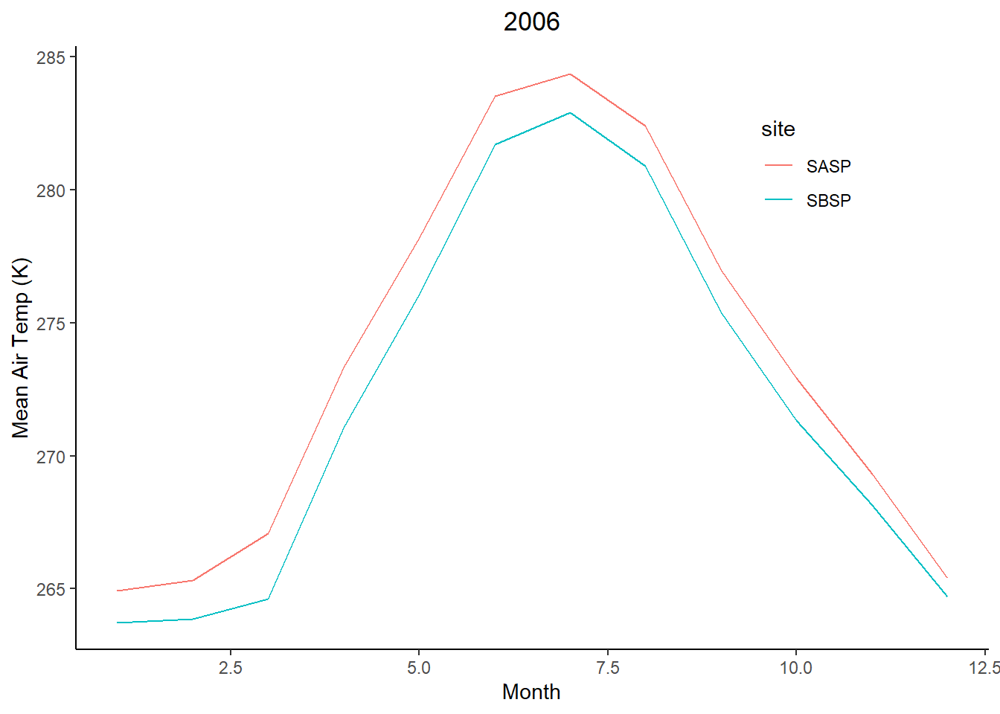
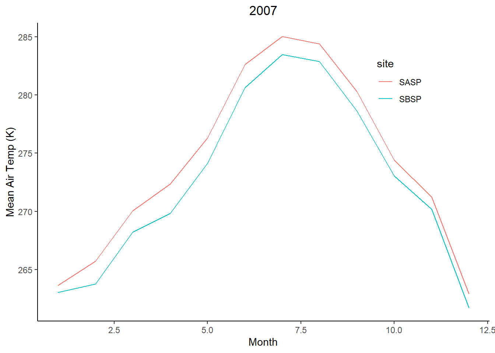
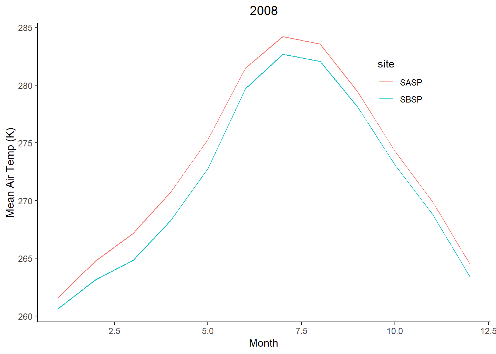
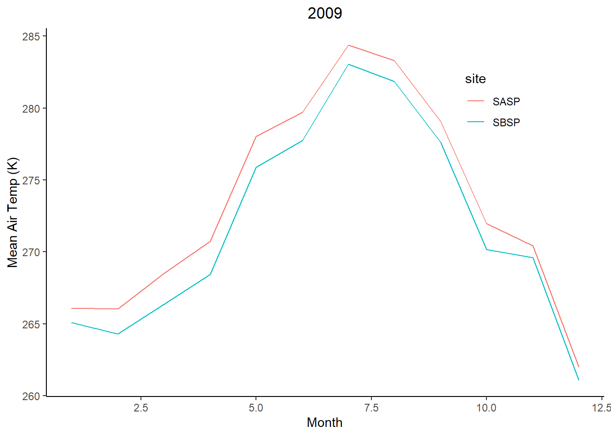
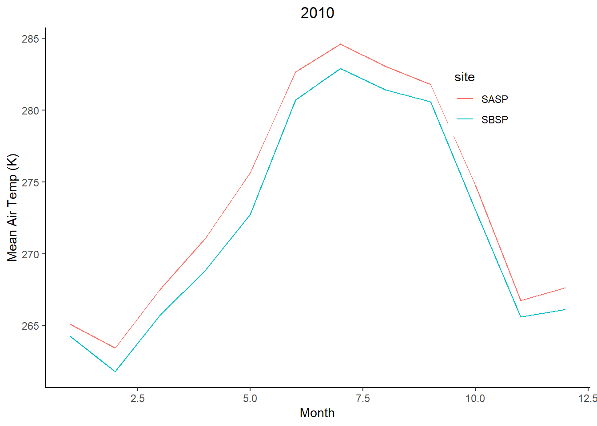
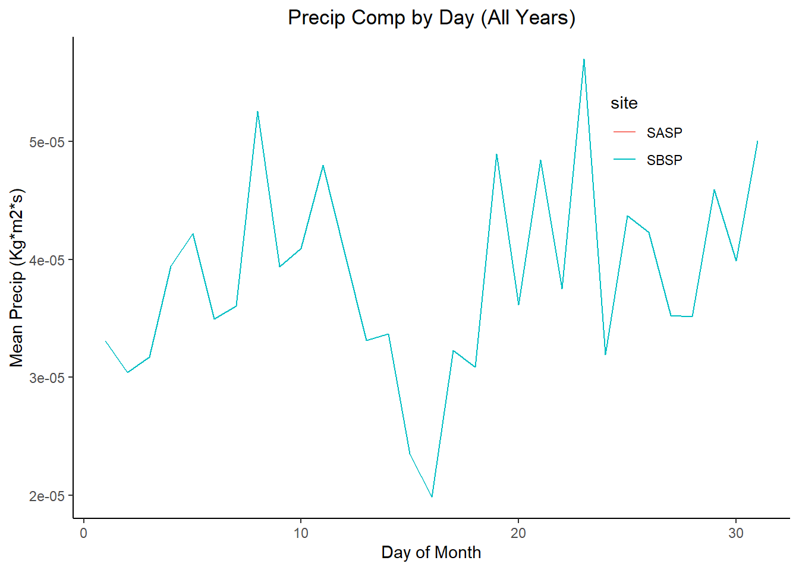

Chapter 3 Chapter 3: Snow Data Assignment for Web Scraping, Functions, & Iteration
Extract the meteorological data URLs. Here we want you to use the
rvestpackage to get the URLs for theSASP forcingandSBSP_forcingmeteorological datasets.Download the meteorological data. Use the
download_fileandstr_split_fixedcommands to download the data and save it in your data folder. You can use a for loop or a map function.Write a custom function to read in the data and append a site column to the data.
Use the
mapfunction to read in both meteorological files. Display a summary of your tibble.
## year month day hour
## Min. :2003 Min. : 1.000 Min. : 1.00 Min. : 0.00
## 1st Qu.:2005 1st Qu.: 3.000 1st Qu.: 8.00 1st Qu.: 5.75
## Median :2007 Median : 6.000 Median :16.00 Median :11.50
## Mean :2007 Mean : 6.472 Mean :15.76 Mean :11.50
## 3rd Qu.:2009 3rd Qu.: 9.000 3rd Qu.:23.00 3rd Qu.:17.25
## Max. :2011 Max. :12.000 Max. :31.00 Max. :23.00
## precip..kg.m.2.s.1. air.temp..K. site
## Min. :0.000e+00 Min. :242.1 Length:138336
## 1st Qu.:0.000e+00 1st Qu.:265.8 Class :character
## Median :0.000e+00 Median :272.6 Mode :character
## Mean :3.838e-05 Mean :272.6
## 3rd Qu.:0.000e+00 3rd Qu.:279.7
## Max. :6.111e-03 Max. :295.8- Make a line plot of mean temp by year by site (using the
air temp [K]variable). Is there anything suspicious in the plot? Adjust your filtering if needed.

##The temperature increases dramatically from the starting year (2003) and begins to level off & fluctuate closer to 2005. This is most likely due to the 2003 data being partial and only including winter temperatures. By filtering out 2003 and 2004, we can expect a more concise y-axis and remove outliers.

##The updated graph gives a far less skewed insight into the temperature range of a seven-year span. Temperatures fluctuate between a ~3 K threshold. No more visible anomalies.
- Write a function that makes line plots of monthly average temperature at each site for a given year. Use a for loop to make these plots for 2005 to 2010. Are monthly average temperatures at the Senator Beck Study Plot ever warmer than the Snow Angel Study Plot?

##The graphs display a consistently higher temperature in the Snow Angel Study Plot, although the Senator Beck Study Plot remains fairly close and mimics the curvature. The Senator Beck Study Plot is colder every year and month on average.
Bonus) Make a plot of average daily precipitation by day of year (averaged across all available years). Color each site.

##The average daily precipitation appears to be identical at both sites, but I could have made an error in summarizing and averaging the precipitation values. Either way, there does not appear to be any notable difference between the daily values at the two sites.